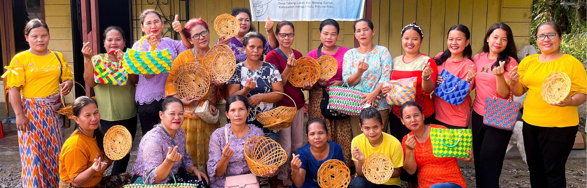
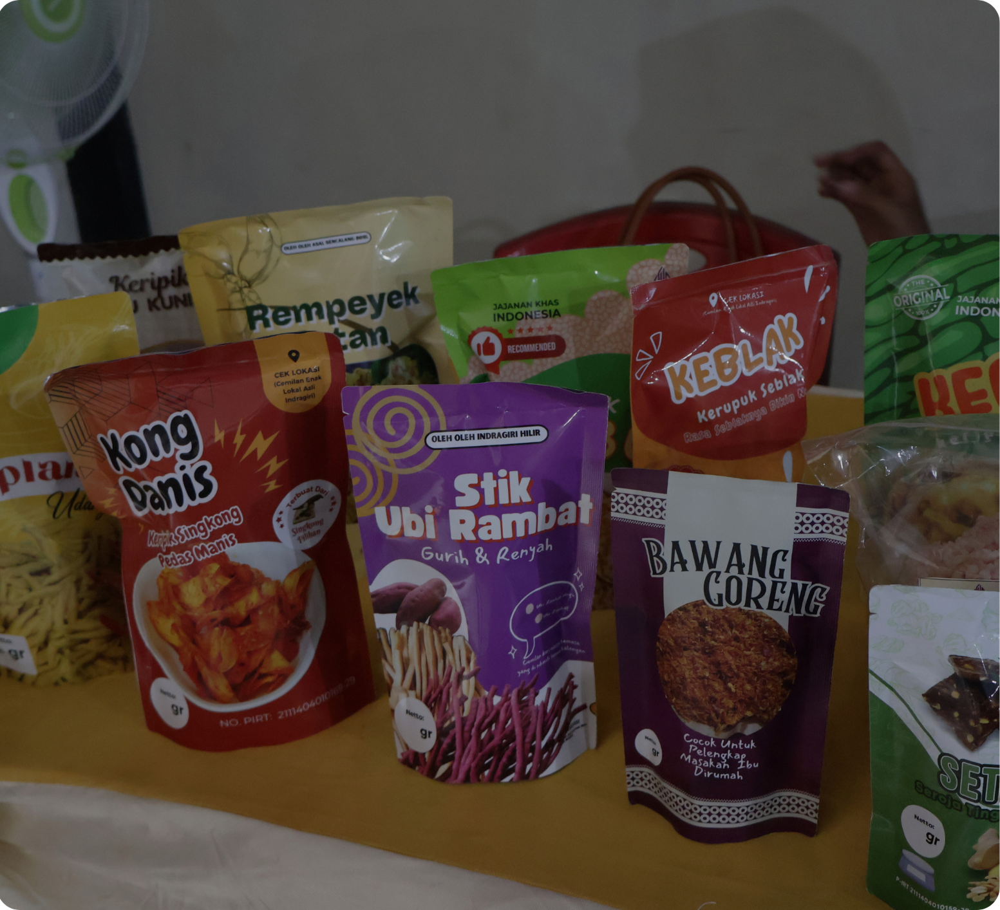

Pengembangan Usaha & Pemberdayaan Ekonomi Perempuan
Menguatkan bisnis dan kapasitas kewirausahaan
Meningkatnya nilai tambah dari sumberdaya lokal

Perempuan sebagai penggerak pertumbuhan ekonomi lokal

Perempuan dan Pengembangan Unit Usaha
Pengembangan unit usaha berbasis kelembagaan untuk menciptakan nilai tambah dari potensi lokal, sekaligus membuka peluang dan memperkuat peran perempuan dalam kegiatan ekonomi yang berkelanjutan.

2,253
PEREMPUAN TERLIBAT
18
UNIT BISNIS
73
KELOMPOK WANITA TANI
Mengembangkan unit usaha lokal di wilayah Riau untuk menciptakan nilai tambah, mendiversifikasi sumber pendapatan, dan menguatkan partisipasi ekonomi perempuan.
“Setelah mendapatkan pendampingan, kami belajar mulai dari cara merawat ayam, pemberian pakan, menjaga kesehatan ayam, sampai pencatatan dan pengelolaan keuangan usaha.”
— Mukinah, Restu Berjaya
“Kami bukan lagi perempuan yang menunggu, kami adalah penggerak ekonomi keluarga dan desa. Potensi lokal adalah kekuatan kami, dan keberhasilan ini adalah bukti bahwa perempuan bisa.”